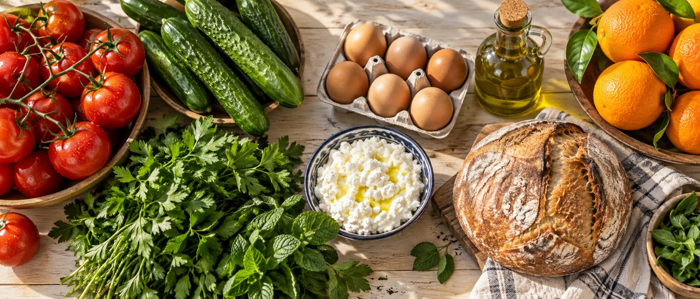

צלמו קבלה או חפשו מוצר - ותוך דקה תדעו מה מעלה סוכר ובמה כדאי להחליף.

גרמי סוכר אמיתיים מהקטלוג שלנו - לפני מול אחרי. אותו טעם, פחות סוכר.
הערכים ל-100 גרם / 100 מ״ל, מהתוויות של המוצרים עצמם (Open Food Facts) ומהקטלוג שלנו. כפית סוכר ≈ 4.2 גרם.
מצלמים את הקבלה מהסופר (או בוחרים תמונה מהגלריה)
כל מוצר מקבל צבע: ירוק, צהוב או אדום
לכל מוצר אדום - חלופה בריאה, המחיר ואיפה קונים
הסריקה מתבצעת כולה בטלפון שלכם. התמונה לא נשלחת לשום שרת.
השירות נותן הכוונה כללית בלבד ואינו תחליף לייעוץ רפואי.
בשאלות על התפריט שלכם - התייעצו עם הרופא או הדיאטנית.
מתכוננים...
חפשו כל מוצר מהקטלוג המלא שלנו - 749 מוצרים - בלי צורך בקבלה. לחיצה על מוצר מציגה את הכל: ערכים תזונתיים, תוויות אדומות, מדד גליקמי, כפיות סוכר וחלופות מדורגות.
סלים מוכנים ומאוזנים לסוכרתיים - עם רשימת מצרכים, מחיר אמיתי לכל רכיב מתומחר, ומחיר למנה.
ארוחות מאוזנות לסוכרתיים, מורכבות רק ממוצרים בדירוג ירוק בקטלוג שלנו - חלבון, סיבים ומדד גליקמי נמוך. המחיר לכל רכיב מחושב יחסית לכמות במנה (למשל 2 ביצים מתוך 18) מתוך מחיר האריזה היומי.